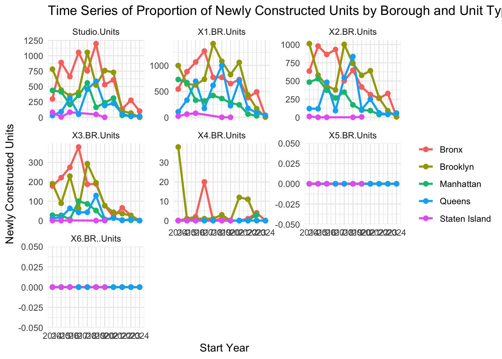
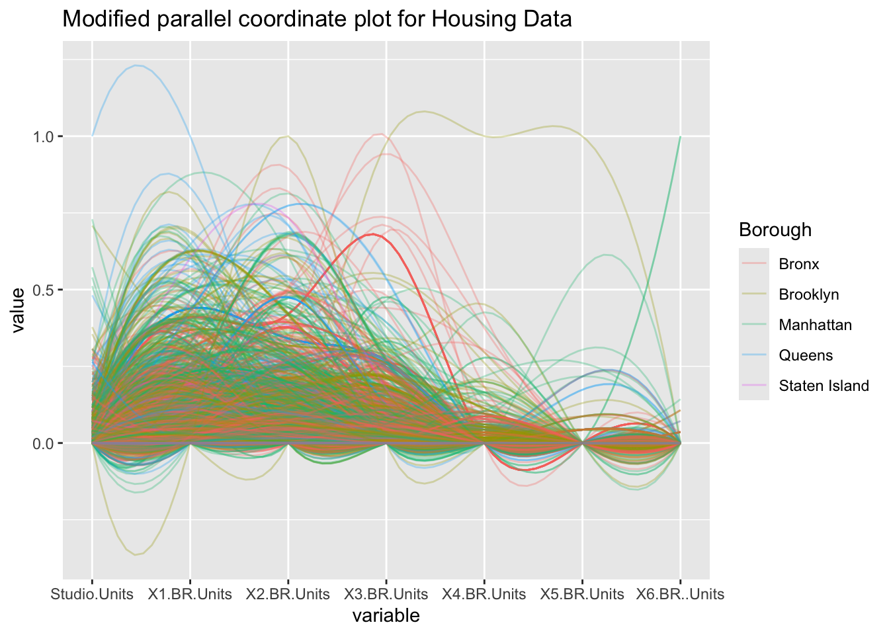
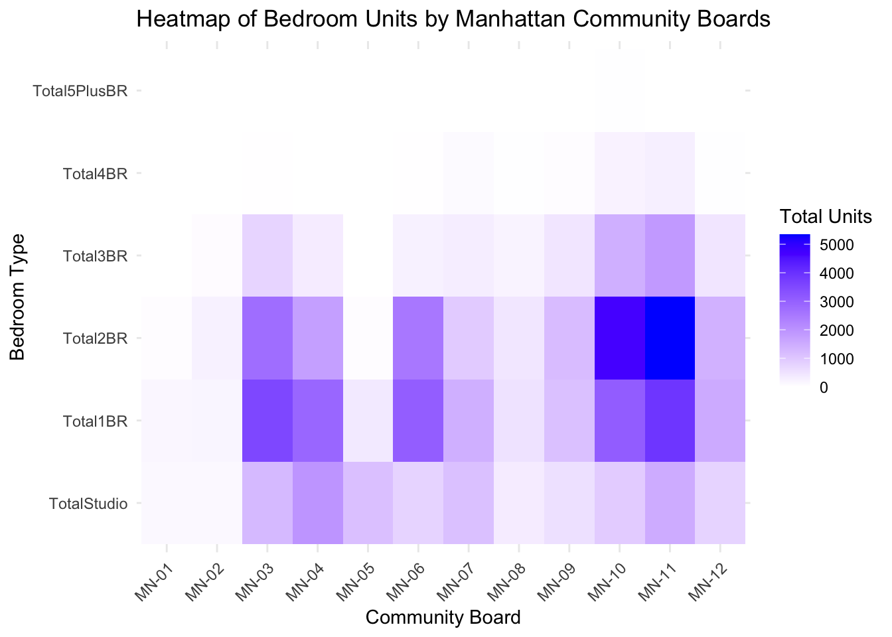
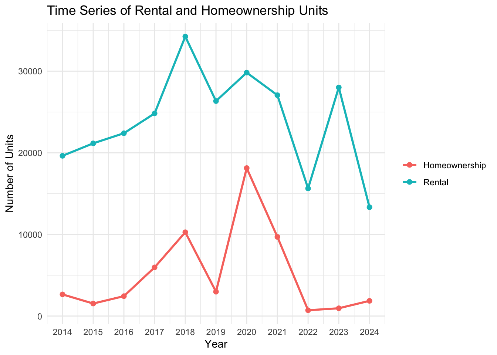
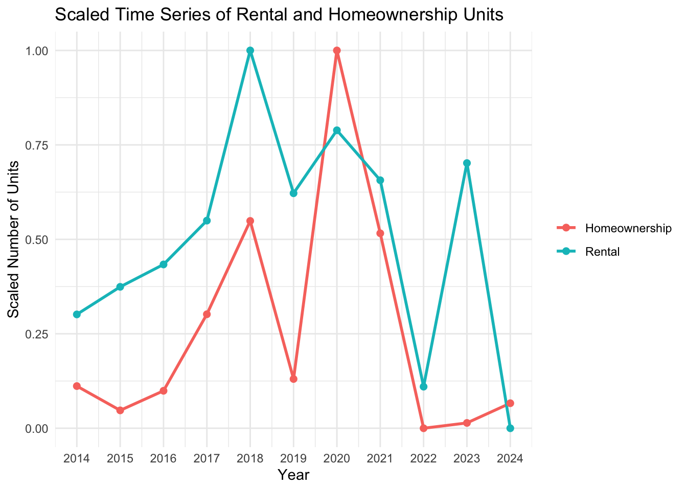
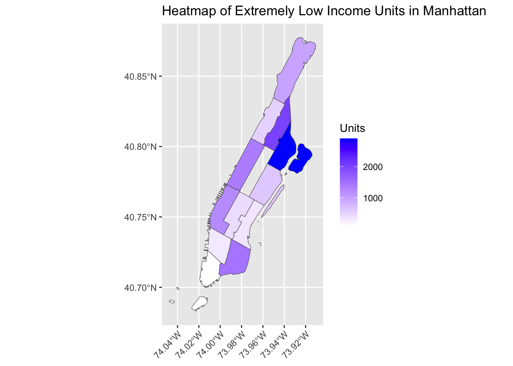

Here we look at the income proportions for each borough. Given that the dataset came from an affordable housing project, we can see that the proportions are high for very low income units and low income units for all boroughs. Bronx and Brooklyn show similar patterns, with a gradual increase of proportion from extremely low to low income types and a significant drop on moderate and the low proportion persists to the middle income units. Queens is also similar with the difference being that there are more propotions of moderate and middle income units. One standout observation is the overwhelming proportion of low income units in Staten Island, making up about 52%, with significantly smaller proportions in other income categories. In contrast, Manhattan has a more balanced distribution of income types, showing greater variability. This suggests that its housing developments aim to cater to a broader range of economic groups.
Code
manhattan_totals <- data |>filter(Borough =="Manhattan") |>group_by(Community.Board) |>summarise(TotalStudio =sum(Studio.Units, na.rm =TRUE),Total1BR =sum(X1.BR.Units, na.rm =TRUE),Total2BR =sum(X2.BR.Units, na.rm =TRUE),Total3BR =sum(X3.BR.Units, na.rm =TRUE),Total4BR =sum(X4.BR.Units, na.rm =TRUE),Total5PlusBR =sum(X5.BR.Units, na.rm =TRUE) )manhattan_long <- manhattan_totals |>pivot_longer(cols =starts_with("Total"),names_to ="BedroomType",values_to ="Count" ) |>mutate(BedroomType =fct_relevel(BedroomType, "TotalStudio", "Total1BR", "Total2BR", "Total3BR", "Total4BR", "Total5PlusBR") )ggplot(manhattan_long, aes(x = Community.Board, y = BedroomType, fill = Count)) +geom_tile() +scale_fill_gradient(low ="white", high ="blue") +labs(title ="Heatmap of Bedroom Units by Manhattan Community Boards",x ="Community Board",y ="Bedroom Type",fill ="Total Units" ) +theme_minimal() +theme(axis.text.x =element_text(angle =45, hjust =1))
This graph shows the residential housing landscape in Manhattan. There are more number of smaller housing units (1BR and 2BR), reflecting the demand for housing suitable for individuals or small households. The concentration of units in District 11(MN-11) suggests that areas like East Harlem have been a focus for development, particularly for low- to moderate-income residents.
On the other hand, areas like District 1 and 2 (MN-01, MN-02) have fewer housing units overall, possibly due to the dominance of commercial spaces or high-income luxury housing that may not cater to smaller or affordable units. (reference to link which shows the central business districts). Fewer number of larger units (3BR and above) across the borough may indicate the challenges of accommodating larger families in Manhattan’s housing market.
Code
ggplot(constructionGraphData, aes(x = Start.Year, y = proportionSum, color = Borough)) +geom_line(size =1) +geom_point(size =2) +labs(title ="Time Series of Newly Constructed Units by Borough",x ="Newly Constructed Units",y ="Start Year",color ="Borough" ) +scale_x_continuous(breaks =seq(2014, 2024, 1), limits =c(2014, 2024)) +theme_minimal() +theme(legend.title =element_blank())
Warning: Using `size` aesthetic for lines was deprecated in ggplot2 3.4.0.
ℹ Please use `linewidth` instead.

This figure presents the annual number of newly constructed housing units across the five boroughs of New York, providing insights into the temporal and spatial distribution of housing development. It highlights boroughs with the highest number of new units and the decline in construction activity in the most recent years (post 2020). Overall, Brooklyn and Bronx consistently mark the highest levels of construction activity annually while Staten Island records the lowest.
Code
newConstructionGraph$Start.Year <-as.numeric(newConstructionGraph$Start.Year)ggplot(newConstructionGraph, aes(x = Start.Year, y = Proportion, color = Borough)) +geom_line(size =1) +geom_point(size =2) +facet_wrap(~ UnitType, scales ="free_y") +labs(title ="Time Series of Proportion of Newly Constructed Units by Borough and Unit Type",x ="Start Year",y ="Newly Constructed Units",color ="Borough" ) +scale_x_continuous(breaks =seq(2014, 2024, 1), limits =c(2014, 2024)) +theme_minimal() +theme(legend.title =element_blank()) +theme(axis.text.x =element_text(angle =45, hjust =1))

Focusing on the number of newly constructed units per unit type (studio, one bedroom, …, six or more bedrooms), the figure above breaks the previous graph into facets. The trend of Bronx and Brooklyn marking the highest construction activity and Staten Island having the lowest persist across all the unit types, implying that the proportion of newly constructed units are same across the five boroughs. Notably, no units with five or more bedrooms were newly constructed within the time period covered by the data.
Code
ProportionData <- data |>group_by(Start.Year) |>summarise("Rental"=sum(Counted.Rental.Units, na.rm =TRUE),"Homeownership"=sum(Counted.Homeownership.Units, na.rm =TRUE) )ProportionData <- ProportionData |>pivot_longer(cols =c("Rental", "Homeownership"),names_to ="Type",values_to ="Value" )ProportionData$Start.Year <-as.numeric(ProportionData$Start.Year)ggplot(ProportionData, aes(x = Start.Year, y = Value, color = Type)) +geom_line(size =1) +geom_point(size =2) +scale_x_continuous(breaks =seq(2014, 2024, 1), limits =c(2014, 2024)) +labs(title ="Time Series of Rental and Homeownership Units",x ="Year",y ="Number of Units",color ="Type" ) +theme_minimal() +theme(legend.title =element_blank())

This figure displays the number of homeownership units (red line) and rental (blue line) units from 2014 to 2024. It reveals that the rental units outnumber homeownership units across all the time period covered by the dataset.
Rental units show a consistent upward trend from 2014 to 2018, where it reaches its peek at about 35,000 units. Following 2019, the number of rental units fluctuate with the steepest decrease in 2022 and 2024.
Similarly, homeownership units also display increasing trend from 2015 to 2018. After reaching its peak at about 18,000 units in 2020, it decreases significantly until 2022.
Both types of units decreasing significantly in 2021 and 2022 might suggest that the Covid-19 pandemic had a negative influence on these units.
ProportionData <- data |>group_by(Start.Year) |>summarise("Rental"=sum(Counted.Rental.Units, na.rm =TRUE),"Homeownership"=sum(Counted.Homeownership.Units, na.rm =TRUE) )ProportionData <- ProportionData |>pivot_longer(cols =c("Rental", "Homeownership"),names_to ="Type",values_to ="Value" )ProportionData <- ProportionData |>group_by(Type) |>mutate(scaledVal = (Value -min(Value)) / (max(Value) -min(Value)))ProportionData$Start.Year <-as.numeric(ProportionData$Start.Year)ggplot(ProportionData, aes(x = Start.Year, y = scaledVal, color = Type)) +geom_line(size =1) +geom_point(size =2) +scale_x_continuous(breaks =seq(2014, 2024, 1), limits =c(2014, 2024)) +labs(title ="Scaled Time Series of Rental and Homeownership Units",x ="Year",y ="Scaled Number of Units",color ="Type" ) +theme_minimal() +theme(legend.title =element_blank())

This visualization is a standardized version of the figure above using uniminmax scaling to fit within the range of 0 and 1. It allows easier comparison between the relative trends of homeownership and rental units.
Both types of units follow the same pattern of increase or decrease from 2015 to 2023 despite the difference in their relative percentages. In general, the relative trends for rental units are higher compared to homeownership units across most of the observed period.
Code
ProportionData <- data |>filter(Start.Year >=2018& Start.Year <=2022) |>mutate(Start.Month =as.numeric(Start.Month)) |>group_by(Start.Year, Start.Month) |>summarise("Rental"=sum(Counted.Rental.Units, na.rm =TRUE),"Homeownership"=sum(Counted.Homeownership.Units, na.rm =TRUE),.groups ="drop" ) |>pivot_longer(cols =c("Rental", "Homeownership"),names_to ="Type",values_to ="Value" ) |>arrange(Start.Year, Start.Month) |>group_by(Start.Year, Type) |>mutate(Cumulative_Value =cumsum(Value))ggplot(ProportionData, aes(x = Start.Month, y = Cumulative_Value, color =as.factor(Start.Year), group = Start.Year)) +geom_line(size =1) +geom_point(size =2) +scale_x_continuous(breaks =1:12, labels = month.abb) +labs(title ="CDF of Rental and Homeownership Units from 2018 to 2022",x ="Month",y ="Housing Units",color ="Year") +facet_wrap(~ Type) +theme_minimal() +theme(legend.position ="bottom",axis.text.x =element_text(angle =45, hjust =1))

This graph depicts the CDF of rental and homeownership units from 2018 to 2022, highlighting monthly patterns during the period of steepest fluctuations. Consistent with the first figure, it shows that the rental units outnumber homeownership units.
Over these five years, both homeownership and rental units usually experienced a rapid increase in cumulative units in June, except for 2020, which saw the highest increase in March. After the steep slope, the growth of homeownership units flattens for majority of the months while the rental units exhibits smaller monthly increments later in the year. The quarterly data update explains the significant increases in March, June, September, and December.
Code
manhattan_map <- nyc_shapefile |>filter(boro_cd %in%101:112)manhattan_totals <- data |>filter(Borough =="Manhattan") |>group_by(Community.Board) |>summarise(TotalExtremelyLowIncome =sum(Extremely.Low.Income.Units, na.rm =TRUE),TotalVeryLowIncome =sum(Very.Low.Income.Units, na.rm =TRUE),TotalLowIncome =sum(Low.Income.Units, na.rm =TRUE),TotalModerateIncome =sum(Moderate.Income.Units, na.rm =TRUE),TotalMiddleIncome =sum(Middle.Income.Units, na.rm =TRUE) )manhattan_totals <- manhattan_totals |>mutate(boro_cd =as.numeric(sub("MN-", "1", Community.Board)) )manhattan_map_data <- manhattan_map |>left_join(manhattan_totals, by ="boro_cd")ggplot(manhattan_map_data) +geom_sf(aes(fill = TotalExtremelyLowIncome)) +scale_fill_gradient(low ="white", high ="blue") +labs(title ="Heatmap of Extremely Low Income Units in Manhattan",fill ="Units" ) +theme(axis.text.x =element_text(angle =45, hjust =1) )
This heatmap of extremely low-income units in Manhattan highlights the geographic disparities in affordable housing distribution. The darker shaded areas, such as District 11, which includes the neighborhoods of East Harlem and Randalls Island, have a higher concentration of extremely low-income units. In contrast, District 1, which encompasses the Financial District and Tribeca, shows a much smaller number of these units. According to reference data, the median household income in the Financial District and Tribeca (District 1) is $193,906, while East Harlem has a significantly lower median income of $37,468.
Each district is colored based on its dominant income unit category, showing housing trends across NYC. Many districts are dominated by “Extremely.Low.Income.Units” and “Very.Low.Income.Units”. The clear differences between neighborhoods reveal housing inequalities, with lower-income units concentrated in certain areas. These difference points to broader economic disparities that affect access to housing for different income groups.
Code
constructionData <- constructionData |>filter(ProjectDuration !=0)ggplot(constructionData, aes(x = ProjectDuration, y = Total.Units)) +geom_point(size =1, alpha =0.2) +facet_wrap(~ Borough) +labs(title ="Scatterplot of Project Duration vs Total Housing Units by Borough",x ="Project Duration (Days)",y ="Total Units" ) +theme_minimal()

This scatterplot examines the relationship between project duration (in days) and the total number of housing units for each construction project across the five boroughs. By visualizing these patterns, we aim to compare housing construction patterns and identify borough specific trends. As concluded from the previous figure, Staten Island recorded the fewest number of newly constructed units, preventing us from drawing meaningful conclusions for that borough. Across all boroughs, most construction projects ended within 1,000 days while a few extending between 1,000 days to 2,000 days.